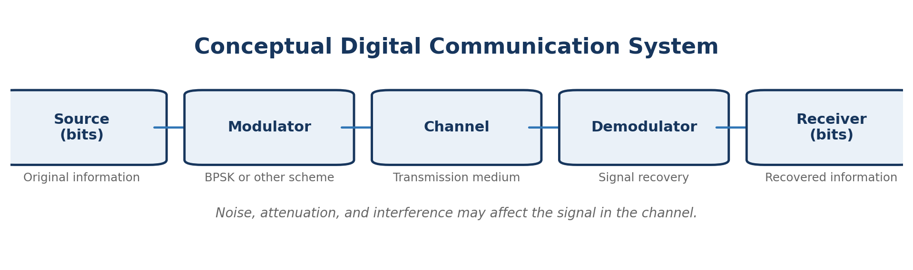
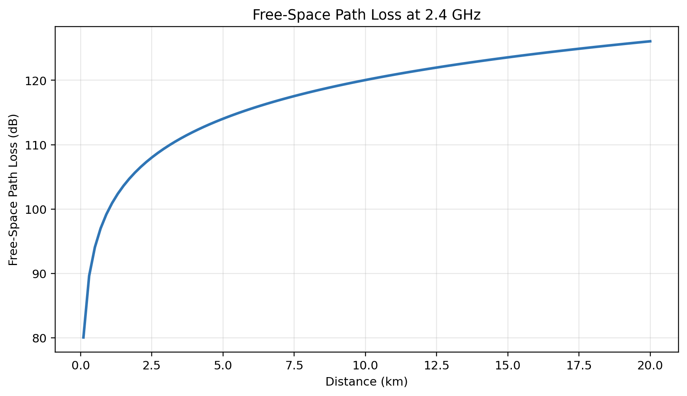
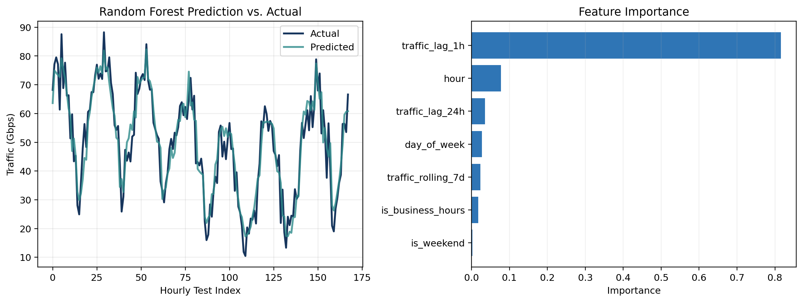
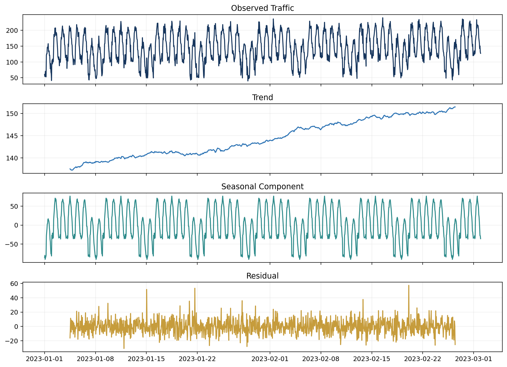
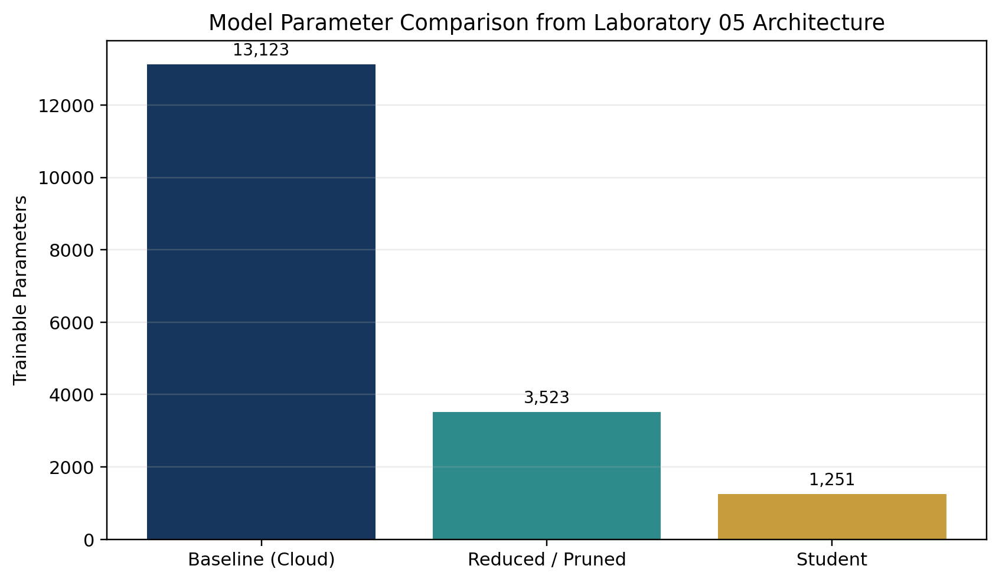
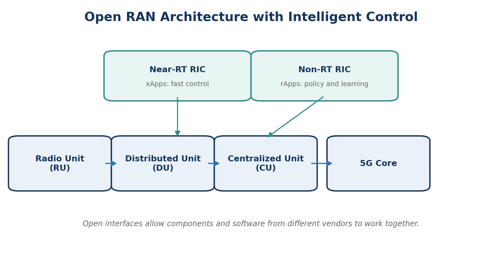
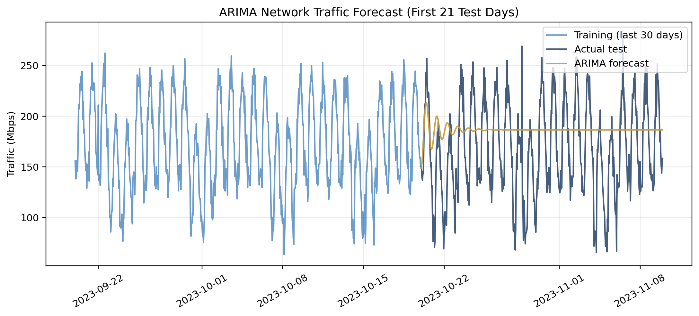
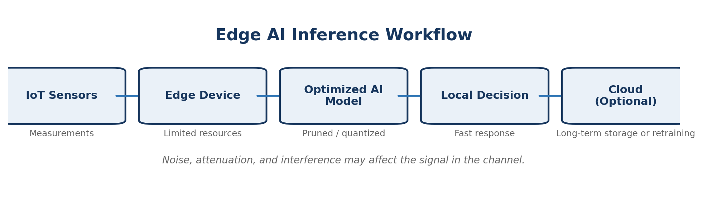

Laboratory 01
Conceptual Communication System
I modeled the complete signal path from source to receiver and identified where modulation, noise, attenuation, and recovery affect communication quality.
Open artifactHouston City College · July 2026
A course portfolio documenting my progression from communication-system fundamentals to AI-driven network prediction, Open RAN, edge computing, cybersecurity, sustainable communications, and the developing vision for 6G.
Portfolio purpose
This portfolio combines selected artifacts, reflections, practical project documentation, assessment evidence, and a learning timeline. I organized it to show how each course activity added a new layer to my understanding. Early work focused on signals, channels, topologies, and wireless propagation. Later work applied machine learning and time-series analysis to network traffic, examined AI control in Open RAN, and considered the limits of deploying models on edge devices.
The site is designed to remain updateable. New files can be added to the artifact folders, project results can be replaced with original screenshots, and the update date can be changed without rebuilding the full portfolio.
Selected works

Laboratory 01
I modeled the complete signal path from source to receiver and identified where modulation, noise, attenuation, and recovery affect communication quality.
Open artifact
Laboratory 02
Python and Matplotlib were used to show how path loss rises from about 80.04 dB at 0.1 km to 126.06 dB at 20 km for a 2.4 GHz signal.
View Python code
Laboratory 03
A Random Forest model achieved a testing R² of 0.893. One-hour lag traffic was the strongest feature, showing the predictive value of recent network behavior.
View Python code
Laboratory 04
I studied trend, seasonality, stationarity, ARIMA forecasting, engineered features, and the role of LSTM models in predicting future network demand.
Open laboratory documentation
Laboratory 05
The architectures decreased from 13,123 parameters in the baseline model to 3,523 in the reduced model and 1,251 in the student model.
Open laboratory documentation
Assignment 03
I compared traditional RAN with Open RAN and distinguished fast Near-RT RIC control through xApps from policy and learning functions in the Non-RT RIC through rApps.
Open artifactReflective essays
At the beginning of the course, I mainly thought of telecommunications as phones, internet access, and wireless signals. Module 1 changed that view by showing that every communication service depends on a structured process. Information begins at a source, is converted by a transmitter, travels through a channel, and must be reconstructed by a receiver. The quality of the result depends on bandwidth, latency, noise, attenuation, reliability, and the architecture that connects the devices.
The Free-Space Path Loss laboratory made the physical limitations of wireless communication more concrete. Instead of only reading that a signal weakens with distance, I calculated the loss and displayed it in a graph. I could see that at the same 2.4 GHz frequency, path loss rose by approximately 46 dB between 0.1 km and 20 km. This helped me understand why coverage planning requires antenna placement, power, frequency choice, and realistic expectations about the environment.
My understanding then expanded from the signal path to complete mobile-network architecture. I learned why 5G Core uses a service-based architecture, how network slicing supports services with different requirements, and how MEC moves processing closer to users to reduce delay. Open RAN added another level because it showed how the radio network can be separated into interoperable components and controlled through intelligent applications. By the end of the course, I no longer viewed telecommunications as one connection. I viewed it as a coordinated system of radio access, core functions, computing, software, data, security, and operational decisions.
The course showed me that AI becomes useful when it is connected to a clear network problem. In Laboratory 03, the problem was predicting hourly traffic so that a network could prepare resources before demand increased. I generated data with daily, weekly, annual, and business-hour patterns. I then created lag and rolling-average features and trained a Random Forest regressor. The testing R² of 0.893 showed that the model captured most of the traffic variation in the synthetic test period.
The feature-importance result was also meaningful. Traffic from one hour earlier contributed about 81.6% of the model's total importance, while hour of day and traffic from 24 hours earlier added additional context. This result connected machine-learning concepts to a practical network-management idea: recent behavior is valuable for short-term scheduling, but calendar patterns and repeated daily behavior also matter.
Laboratory 04 expanded the same problem into time-series analysis. I studied seasonal decomposition, stationarity, ARIMA, linear regression with engineered features, and the concept of LSTM sequence modeling. The ARIMA example produced an RMSE of about 51.03 Mbps on the simulated test set. That result was not only a score; it demonstrated that a model must be evaluated against the pattern and variability of the data before it can guide operational decisions.
Laboratory 05 applied AI to a different telecommunications problem: deploying inference near IoT devices. The focus changed from maximum model capacity to a balance among accuracy, model size, latency, memory, and energy. This taught me that the best model depends on where it will run. A cloud server can support a larger model, while a microcontroller may require INT8 quantization or a much smaller network. AI in telecommunications is therefore both a prediction problem and a systems-engineering problem.
I improved my ability to connect code output with an engineering interpretation. Earlier, I might have reported that a graph increased or that a model had a certain score. Through these laboratories, I practiced explaining why the result matters. Path loss affects coverage planning. Traffic prediction can support resource allocation. Seasonal decomposition can separate recurring behavior from unexplained events. Model compression can make local inference possible on devices with limited memory and power.
I also became more comfortable with Python libraries used for technical analysis, including NumPy, pandas, Matplotlib, scikit-learn, statsmodels, and TensorFlow concepts. I practiced preparing data, creating engineered features, splitting time-series data chronologically, evaluating models with MSE, MAE, RMSE, and R², and presenting results through readable visualizations.
My future growth areas are working with real telecommunications datasets, validating models under changing network conditions, and learning more about deployment. Synthetic data made it possible to understand the complete process, but real network data contains missing values, unexpected events, changing user behavior, and privacy restrictions. I also want to improve my knowledge of RIC applications, cloud-edge orchestration, model monitoring, and cybersecurity for AI systems. These skills would help me move from classroom simulations toward reliable AI solutions for operational networks.
Project documentation
Project 1 · Wireless propagation
How does distance affect the theoretical propagation loss of a 2.4 GHz wireless signal?
NumPy generated 100 distances from 0.1 to 20 km. The FSPL formula was applied and Matplotlib displayed the result.
Loss increased from 80.04 dB at 0.1 km to 100.04 dB at 1 km, 120.04 dB at 10 km, and 126.06 dB at 20 km.
Distance creates a large theoretical loss even before buildings, weather, antenna mismatch, and interference are considered.
fspl = 20*np.log10(distances) \
+ 20*np.log10(frequency) + 32.44Project 2 · Supervised learning
Can historical and calendar-based features predict hourly telecommunications traffic?
A synthetic 2023 dataset was created with seasonal patterns. A chronological 80/20 split and a 100-tree Random Forest regressor were used.
Testing MSE was 34.64 and testing R² was 0.893. The one-hour lag feature contributed about 81.6% of total feature importance.
The model learned recurring demand and short-term continuity, supporting the idea of proactive allocation before congestion develops.
model = RandomForestRegressor(
n_estimators=100,
max_depth=10,
random_state=42
)
model.fit(X_train, y_train)
Project 3 · Time-series analysis
How can time-series models use trend and seasonality to forecast future network traffic?
The lab generated hourly traffic with daily and weekly behavior, trend, seasonal variation, random noise, and congestion spikes. It used decomposition, ADF testing, ARIMA, regression features, and an LSTM concept.
The ADF p-value was far below 0.05 for the training series. The documented ARIMA(2,1,2) run produced MAE 42.38 Mbps and RMSE 51.03 Mbps.
Forecast errors must be considered alongside abnormal spikes and recurring patterns. No single metric is sufficient for deciding whether a model is operationally useful.
Documentation note: The source text available for this portfolio ends during the LSTM section. The portfolio therefore reports the complete ARIMA and regression concepts without inventing missing LSTM results.
Open source laboratory text
Project 4 · Edge computing
How can an IoT classification model be made small and fast enough for edge deployment?
TensorFlow/Keras architectures represented a baseline model, a reduced model, INT8 quantization, and a smaller student model. The design compared accuracy, inference time, size, and parameters.
Code-derived architecture counts were 13,123 parameters for the baseline, 3,523 for the reduced model, and 1,251 for the student model.
Edge selection is a tradeoff. Microcontrollers favor quantized models, gateways can use reduced models, and edge servers can support larger models when accuracy is the priority.
Technical note: The course code labels a smaller architecture as “pruned” and trains the student with ordinary categorical loss. I describe those steps accurately rather than claiming formal weight pruning or full knowledge distillation.
Open source laboratory textAssessment artifacts
Telecommunications systems, transmitter-channel-receiver roles, analog versus digital communication, service types, and network topologies.
Communication-system diagram and signal-flow analysis using conceptual blocks and Python visualization.
Free-Space Path Loss simulation at 2.4 GHz with code and graphical output.
EPC versus 5GC, slicing, MEC, AI resource allocation, and the Network Repository Function.
AI/ML in RAN, SON, predictive maintenance, normalized demand, Open RAN, and RIC roles.
Supervised network-traffic prediction using Random Forest and engineered temporal features.
Time-series forecasting with ARIMA, engineered regression features, and an LSTM introduction.
Edge inference and model optimization using smaller architectures and INT8 quantization.
Advanced AI applications, AI-native architecture, and digital-twin networking concepts.
6G vision, AI-native networks, advanced connectivity, and future-network capabilities.
Ethical AI, privacy, fairness, explainability, accountability, and human oversight.
A complete module-by-module narrative with diagrams, calculated laboratory results, reflections, and references.
Growth evidence
Defined communication systems, compared analog and digital signals, evaluated topologies, mapped signal flow, and modeled RF path loss.
Moved from data features and supervised learning into 5G Core, slicing, MEC, and AI-assisted resource allocation.
Studied RIC control, SON, predictive maintenance, time-series forecasting, IoT, and optimized inference near devices.
Connected AI to anomaly detection, energy-aware operation, digital twins, and closed-loop management.
Evaluated AI-native future networks while recognizing privacy, fairness, accountability, security, and human-oversight requirements.
Competencies developed
Python, NumPy, pandas, Matplotlib, scikit-learn, statsmodels, TensorFlow/Keras concepts
Signal flow, path loss, EPC, 5GC, slicing, MEC, Open RAN, RIC, IoT, edge computing
Feature engineering, chronological splitting, MSE, MAE, RMSE, R², feature importance
Technical diagrams, reflective writing, result interpretation, artifact organization, source awareness
Sources and course materials
The graphs and diagrams displayed on this site were generated from course-provided concepts and code for portfolio presentation. Exact third-party publication details can be added from the title pages of the assigned PDFs when the original files are available.
Continuous portfolio
This portfolio was assembled from course milestones and is designed for continued revision. Replace recreated figures with original Canvas screenshots when available, add grade evidence only when verified, and record each meaningful update through GitHub commits.
Current version: 1.0
Last content update: July 10, 2026
Next review: Before final submission on July 20, 2026
Open rubric checklist{kind=link}
{kind=link}